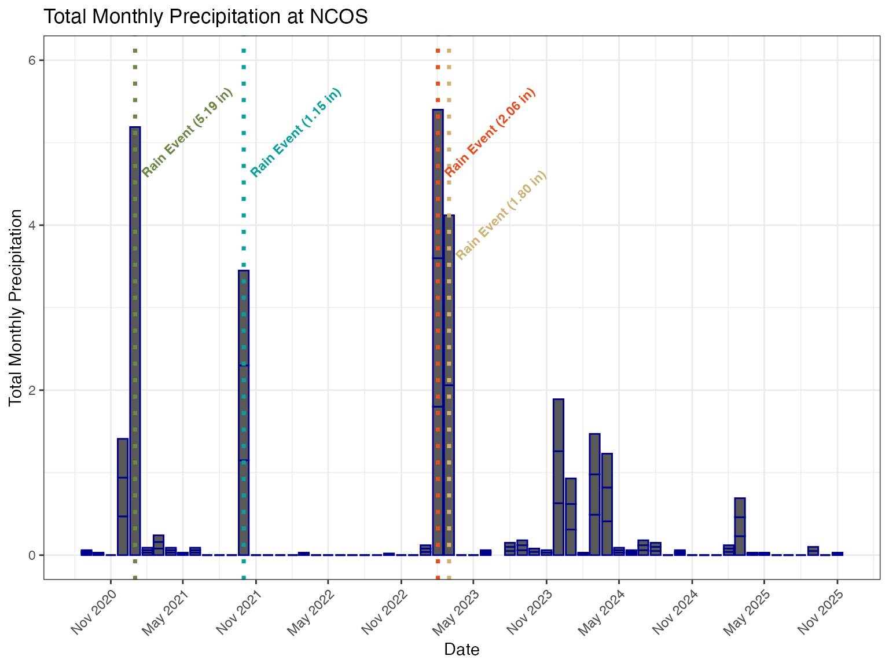
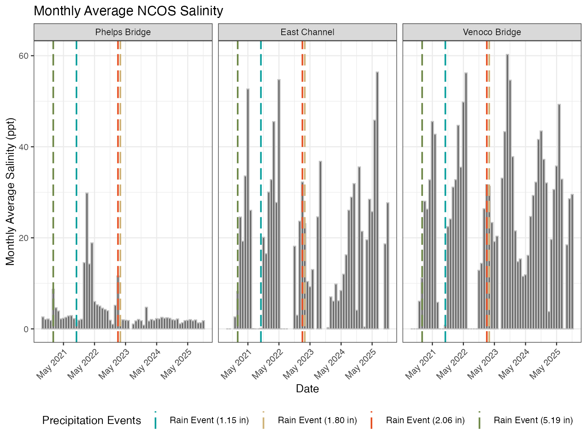
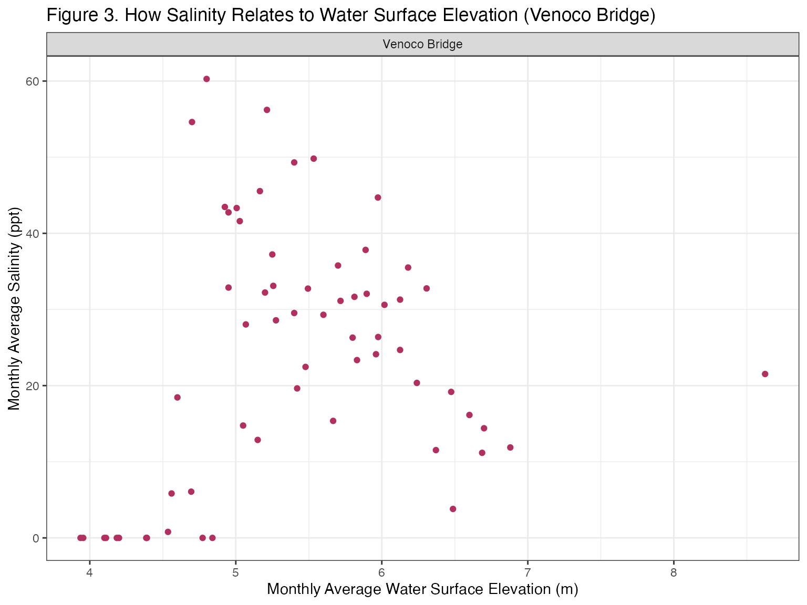
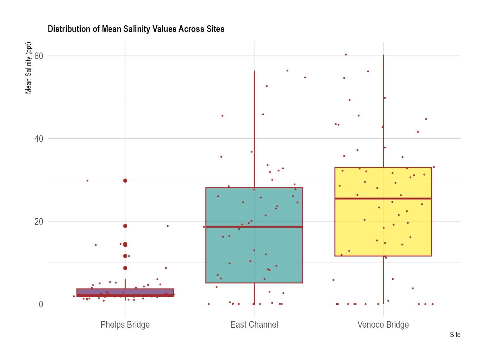

Attaching package: 'cowplot'
The following object is masked from 'package:lubridate':
stamp
# Ridgeline Plot#install.packages("ggridges")library(ggridges)#install.packages("ggplot2")library(ggplot2)# Color Palettelibrary(NatParksPalettes)library(wesanderson)
Registered S3 method overwritten by 'wesanderson':
method from
print.palette NatParksPalettes
# Use ragg_png device for better font rendering and system font supportknitr::opts_chunk$set(dev ="ragg_png")
Data
# weather data from NOAA weather stationweather <-read_csv(here("data", "NOAA-weather-data.csv"))
Rows: 1912 Columns: 9
── Column specification ────────────────────────────────────────────────────────
Delimiter: ","
chr (3): STATION, NAME, DATE
dbl (6): LATITUDE, LONGITUDE, ELEVATION, PRCP, TMAX, TMIN
ℹ Use `spec()` to retrieve the full column specification for this data.
ℹ Specify the column types or set `show_col_types = FALSE` to quiet this message.
# water quality survey metadatametadata <-read_csv(here("data", "NCOS_YSI_Water_Quality_Monitoring_0.csv"))
Rows: 687 Columns: 17
── Column specification ────────────────────────────────────────────────────────
Delimiter: ","
chr (12): GlobalID, Monitoring Date, Monitor Name, Weather, Site Name, Othe...
dbl (4): ObjectID, Water Surface Elevation, x, y
time (1): Time of WQ Measurement
ℹ Use `spec()` to retrieve the full column specification for this data.
ℹ Specify the column types or set `show_col_types = FALSE` to quiet this message.
# water quality parameter measurementswater_parameters <-read_csv(here("data", "YSI_Data_Begin_1.csv"))
Rows: 1488 Columns: 13
── Column specification ────────────────────────────────────────────────────────
Delimiter: ","
chr (6): GlobalID, ParentGlobalID, CreationDate, Creator, EditDate, Editor
dbl (7): ObjectID, Depth Code, DO (mg/L), DO (%sat), Conductivity (uS/cm), S...
ℹ Use `spec()` to retrieve the full column specification for this data.
ℹ Specify the column types or set `show_col_types = FALSE` to quiet this message.
Cleaning Code
Cleaning Weather
weather_clean <- weather |># made column names all lowercaseclean_names() |># puts date in proper format and makes sure its understood as date (not as chr)mutate(date =mdy(date)) |># keeping only these 4 columns of interestselect(date, prcp, tmax, tmin) |># creating new columns for month and year# extracting month from the date (needs to be in the standard date format for this function to work)mutate(month =month(date),year =year(date)) |>mutate(wy =case_when(# when month os october or later, assign a value of year +1# in the water ywar for next year month >=10~ year +1,# keeping all months < 10 the same (sept or earlier), assigning value of existing year.default = year ))
Cleaning Metadata
metadata_clean <- metadata |># col names easier to work with (all lowercase w/ _)clean_names() |># "!" is the "not-operator", columns we DONT want to keep, excludingselect(!c(object_id, creator, editor)) |>mutate(monitoring_date =mdy_hms(monitoring_date)) |>rename(monitoring_datetime = monitoring_date) |>mutate(month =month(monitoring_datetime),year =year(monitoring_datetime)) |># assigning water yearmutate(wy =case_when( month >=10~ year +1,.default = year )) |># creatig new column for site full namemutate(site_full =case_when( site_name =="east_channel"~"East Channel", site_name =="phelps_bridge"~"Phelps Bridge", site_name =="venoco_bridge"~"Venoco Bridge", site_name =="other"~"Other" )) |># filter out Other observationsfilter(site_full !="Other")
Cleaning Water Parameters
# creating a new object from water parameterswater_parameters_clean <- water_parameters |># cleaning column namesclean_names() |># "!" not operator, excluding unneeded columnsselect(!c(creator, editor)) |># renaming depth code to be elevation code to better represent methodologyrename(elevation_code = depth_code) |>## Everything below came from visualizing the data first and defining what to fix/add# fixing a mistake in the datamutate(elevation_code =case_when(# anytime theres a 10 in elevation code, replace it with a 1 elevation_code ==10~1,# everything else, keep the same.default = elevation_code)) |>mutate(# turning column into a factorelevation_code =as_factor(elevation_code),# defining the correct order for the levels of the factorelevation_code =fct_relevel(elevation_code,# write in the order you want"0", "1", "2", "3", "4", "5", "6"))
Joining Code
Water Quality = Metadata + Water Parameters
# full joiningwater_quality <-full_join(# left data framex = metadata_clean,# right data framey = water_parameters_clean,# name the columns in each df that you want to join by (naming the shared column)by =c("global_id"="parent_global_id")) |>select(# information about the observation global_id, monitoring_datetime, time_of_wq_measurement, monitor_name, weather, site_name, other_site_name, site_full, x, y,# water information water_surface_elevation, flow, notes,#measurement information elevation_code, do_mg_l, do_percent_sat, conductivity_u_s_cm, salinity_ppt, temperature_c ) |># taking the date out of this column, dont want the timemutate(date =date(monitoring_datetime)) |># moving the new date column to a better location within the dfrelocate(date, .after = monitoring_datetime) |># dont need this column anymoreselect(!monitoring_datetime)
Water Quality Weather = Water Quality + Weather
# left joinwater_quality_weather <-left_join(# left data framex = water_quality,# right data framey = weather_clean,# joining these dfs by their date columnby ="date")
Wrangling/Summarizing Code
Salinity Outliers
# creating new obj salinity_outlier_ids <- water_quality_weather |># filtering to only include outlier valuesfilter(salinity_ppt >1410) |># extracting the global id column as a vector usign pullpull(global_id)
Summarizing Precipitation
# create new object from `water_quality_weather`monthly_prcp <- water_quality_weather |># only include elevation codes 0, 1, and 2filter(elevation_code %in%c("0", "1", "2")) |># get rid of site names w/ "other"filter(!site_full =="NA") |># removing any duplicate rows based on the combination of month, year, and wydistinct(month, year, prcp) |># grouping by month and yeargroup_by(month, year) |># calculating the sum of prcp per month (not per site as it is a weather event and not site specific)summarise(sum_prcp =sum(prcp, na.rm =TRUE)) |># ungroupingungroup() |># creating a date column to be read as a datemutate(date = lubridate::make_date(.data$year, .data$month, 1)) |># creating levels to `month`, putting them in a logical ordermutate(month =factor(month,levels =1:12,labels =c("Jan", "Feb", "Mar", "Apr", "May", "Jun", "Jul", "Aug", "Sep", "Oct", "Nov", "Dec"),ordered =TRUE))
`summarise()` has regrouped the output.
ℹ Summaries were computed grouped by month and year.
ℹ Output is grouped by month.
ℹ Use `summarise(.groups = "drop_last")` to silence this message.
ℹ Use `summarise(.by = c(month, year))` for per-operation grouping
(`?dplyr::dplyr_by`) instead.
Filtering and Summarizing Salinity
salinity_filtered <- water_quality_weather |># keeping only elevation codes 0, 1, and 2filter(elevation_code %in%c("0", "1", "2")) |># filtering the column global_id to exclude the values that match those in `salinity_outlier_ids`filter(!global_id %in% salinity_outlier_ids) |># dropping the column for other_site_namesselect(!other_site_name) |># get rid of site names w/ "other"filter(!site_name =="other") |># setting the order of the levels (from lowest tp highest avg salinity value)# helps the order of the visualizationsmutate(site_full =fct_relevel(site_full, "Phelps Bridge", "East Channel", "Venoco Bridge")) |># taking out sites w/ NAfilter(!site_full =="NA") |># keeping only columns of interest (to reduce confusion)select(site_full, water_surface_elevation, elevation_code, salinity_ppt, temperature_c, month, year, wy) |># creating levels to `month`, putting them in a logical ordermutate(month =factor(month,levels =1:12,labels =c("Jan", "Feb", "Mar", "Apr", "May", "Jun", "Jul", "Aug", "Sep", "Oct", "Nov", "Dec"),ordered =TRUE)) |># group by site full, month, and yeargroup_by(site_full, month, year) |># calculate mean salinity (per site per month))summarize(mean_salinity =mean(salinity_ppt, na.rm =TRUE),.groups ="drop")
Joining Monthly_prcp and Salinity_filtered
salinity_prcp <- salinity_filtered |>left_join(monthly_prcp, by =c("month", "year"))
Exploratory Figure Code
Exploring Salinity
# create new object `exploratory_salinity` from `water_quality_weather`exploratory_salinity <- water_quality_weather |># only keep elevation codes 0, 1, 2, and 3 (keeping three just for visualization)filter(elevation_code %in%c("0", "1", "2", "3")) |># filtering the column global_id to exclude the values that match those in `salinity_outlier_ids`filter(!global_id %in% salinity_outlier_ids) |># dropping the column `other_site_names`select(!other_site_name) |># filterign out site names that match "other"filter(!site_name =="other") |># setting the order of the levels (from lowest tp highest avg salinity value)# helps the order of the visualizationsmutate(site_full =fct_relevel(site_full, "Phelps Bridge", "East Channel", "Venoco Bridge")) |># taking out sites w/ NAfilter(!site_full =="NA") |># keeping only columns of interest (to reduce confusion)select(site_full, water_surface_elevation, elevation_code, salinity_ppt, temperature_c, month, year) |># group by site, elevation code, month, and yeargroup_by(site_full, elevation_code, month, year) |># calculate mean salinitysummarize(mean_salinity =mean(salinity_ppt, na.rm =TRUE),.groups ="drop") |># creating levels to `month`, putting them in a logical ordermutate(month =factor(month,levels =1:12,labels =c("Jan", "Feb", "Mar", "Apr", "May", "Jun", "Jul", "Aug", "Sep", "Oct", "Nov", "Dec"),ordered =TRUE))
Exploring Water Surface Elevation
# create a new object `monthly_surface_elv` from `water_quality_weather`monthly_surfcae_elv <- water_quality_weather |># only include elevation codes 0, 1, and 2filter(elevation_code %in%c("0", "1", "2")) |># Filter out site names matchign to "other"filter(!site_name =="other") |># group by site, month, and yeargroup_by(site_full, month, year) |># calculate mean water surface elevationsummarise(avg_elv =mean(water_surface_elevation, na.rm =TRUE)) |># ungroup data frameungroup() |># create a date column to be read as a datemutate(date = lubridate::make_date(.data$year, .data$month, 1)) |># creating levels to `month`, putting them in a logical ordermutate(month =factor(month,levels =1:12,labels =c("Jan", "Feb", "Mar", "Apr", "May", "Jun", "Jul", "Aug", "Sep", "Oct", "Nov", "Dec"),ordered =TRUE))
`summarise()` has regrouped the output.
ℹ Summaries were computed grouped by site_full, month, and year.
ℹ Output is grouped by site_full and month.
ℹ Use `summarise(.groups = "drop_last")` to silence this message.
ℹ Use `summarise(.by = c(site_full, month, year))` for per-operation grouping
(`?dplyr::dplyr_by`) instead.
## Joining data frames elv_viz <- monthly_surfcae_elv |># joining by columns month, year, and siteleft_join(salinity_prcp, by =c("month", "year", "site_full")) |># filtering out all NA average elevation valuesfilter(!avg_elv =="NaN")
Creating Precipitation Peaks
# creating a new object `precipitation_peaks` from `salinity_prcp`precipitation_peaks <- salinity_prcp |># including the dates of the top 4 monthly precipitationfilter(date %in%c("2021-01-01", "2023-03-01", "2023-02-01", "2021-10-01")) |># ungrouping data frameungroup() |># keeping these 4 distinct datesdistinct(date, .keep_all =TRUE) |># adding a label to each eventmutate(label =c("Rain Event (5.19 in)", "Rain Event (2.06 in)", "Rain Event (1.80 in)", "Rain Event (1.15 in)"),# setting the y position for each event (dropping the 1.80 event lower for better visualization)label_y =c(4.5, 4.5, 3.5, 4.5))precipitation_peaks_facet <- precipitation_peaks |>cross_join(tibble(site_full =unique(salinity_prcp$site_full))) |>mutate(label_y_2 =rep(c(40, 45, 40, 50), times =3))
\\\\\\\\\\\\\\\\\\\\\\\\\\\\\\\\\\\\\\\
2. Ideas for analysis and background
The overarching question for our project is: How does precipitation explain salinity?
We expect that more precipitation will generally lead to lower salinity because rainfall adds freshwater and dilutes saltier water. However, salinity is also affected by water depth, evaporation and whether the ecosystem is connected to the ocean.
This is especially relevant as North Campus Open Space is a connected coastal wetland system. Because of this, the salinity is influenced by more than rainfall alone. Harrington and Wood (2014), although focused on an Australian wetland, help support this idea by showing that ocean-driven saltwater movement can also affect salinity. Rainfall can lower salinity by adding freshwater, while sea-level changes and saltwater entering the system can raise salinity again.
Additionally, between 2015 to 2016 salinity was reported to increase at NCOS during dry periods because evaporation concentrates salts, while rainfall can lower salinity by adding freshwater (Clark, 2016). Rainfall lowered salinity by adding freshwater to the slough, but major storm and breach events reconnected the slough to the ocean, allowing seawater to enter and raise salinity again (Clark, 2016). The report also notes that salinity often increases with depth, so precipitation helps explain salinity but is not the only factor (Clark, 2016).
References:
Clark, R. (2016). Water Quality of North Campus Open Space & Devereux Slough: Fall 2015 - Spring 2016. [online] Available at: https://escholarship.org/uc/item/2923f039 [Accessed 20 May 2026].
Wood, C. and Harrington, G.A. (2014). Influence of Seasonal Variations in Sea Level on the Salinity Regime of a Coastal Groundwater–Fed Wetland. Groundwater, 53(1), pp.90–98. doi:10.1111/gwat.12168.
Ideas for analyses to answer question and some preliminary code to run those analyses:
To answer our question, “How does precipitation explain salinity?”, we analysed whether monthly precipitation is related to monthly average salinity across NCOS sites. Our draft code already cleans and joins the weather, metadata, and water-quality datasets, then calculates total monthly precipitation and mean monthly salinity by site.
We also chose to use Spearman’s correlation coefficient to test whether salinity tends to decrease as precipitation increases.
The test gave a coefficient value of 0.0166 and p-value of 0.8251, suggesting that precipitation alone does not strongly explain salinity.
\\\\\\\\\\\\\\\\\\\\\\\\\\\\\\\\\\\\\\\
3. Visualizations directly relevant to answering questions
Figures
Figure 1. - Monthly Precipitation at NCOS (Time Series w/ Rain Event Lines)
# base layer: ggplot# data: salinity_prcpggplot(data = salinity_prcp,# x axis: datemapping =aes(x = date,# y axis: monthly precipitation sumy = sum_prcp)) +# prcp displayed by columns (a suggestion made by An after work plan/proposal edits)geom_col(color ="darkblue") +# adding themeing theme_bw() +# x-axis breaks every 6 months (to reduce cognitive load)# Format date axis labels as abbreviated month and full yearscale_x_date(date_breaks ="6 months", date_labels ="%b %Y") +# angling labels to 45 degrees and to be right-alignedtheme(axis.text.x =element_text(angle =45, hjust =1)) +# expanding limits to make room for textscale_y_continuous(limits =c(0, 6)) +# labeling x and y axeslabs(x ="Date",y ="Total Monthly Precipitation",# adding titletitle ="Total Monthly Precipitation at NCOS") +# removing legend, redundanttheme(legend.position ="none") +# adding in lines for prcp eventsgeom_vline(data = precipitation_peaks,# centering them on datesaes(xintercept = date,# coloring them by their established labelcolor = label),# signified by dotted lineslinetype ="dotted",# width of lineslinewidth =1.25) +# adding custom color palettescale_color_manual(values =wes_palette("AsteroidCity1")) +# adding labels to each dotted line from the `precipitation_peaks` objectgeom_text(data = precipitation_peaks,# x-axis location: date# y-axis location: set y value from earlier chunk# label = the defined label from earlier chunk# colro by labelaes(x = date, y = label_y, label = label, color = label),# 45 degree angle for readabilityangle =45,# slightly to right of vertical dotted linehjust =-0.1,# text sixesize =3,# text boldingfontface ="bold")
Warning: Removed 3 rows containing missing values or values outside the scale range
(`geom_col()`).

Figure 2. Salinity Time Series w/ Prcp Highlights
# base layer ggplot# data: salinity_prcpggplot(data = salinity_prcp,# x-axis: datemapping =aes(x = date,# y-axis: mean_salinityy = mean_salinity)) +# column displaying mean salinitygeom_col(color ="grey") +# separating points from sites into different plotsfacet_wrap(~ site_full) +# adding themeingtheme_bw() +# x breaks by year to reduce cognitive load, labeling by abbreviated month and full yearscale_x_date(date_breaks ="12 months", date_labels ="%b %Y") +# angling x axis labels to 45 degrees and to be right-alignedtheme(axis.text.x =element_text(angle =45, hjust =1)) +# labeling x and y axeslabs(x ="Date",y ="Monthly Average Salinity (ppt)",# adding titletitle ="Monthly Average NCOS Salinity",# adding legend titlecolor ="Precipitation Events") +# adding lines from the `precipitation_peaks_facet` objectgeom_vline(data = precipitation_peaks_facet,# oriented on the dateaes(xintercept = date,# different colors by labelcolor = label),# long dash for better vizlinetype ="longdash",# line widthlinewidth =0.75) +# custom colorsscale_color_manual(values =wes_palette("AsteroidCity1")) +# legend at bottom for less visual cluttertheme(legend.position ="bottom")

Figure 3. - How Salinity Relates to Water Surface Elevation (Venoco Bridge)
ggplot(data = elv_viz,mapping =aes(x = avg_elv,y = mean_salinity)) +geom_point(color ="maroon") +facet_wrap(~ site_full) +scale_color_manual(values =wes_palette("GrandBudapest1")) +theme_bw() +labs(x ="Monthly Average Water Surface Elevation (m)",y ="Monthly Average Salinity (ppt)",title ="Figure 2. How Salinity Relates to Water Surface Elevation (Venoco Bridge)")

Figure 4. - How Salinity Varies Between Elevation Codes
Warning in cor.test.default(salinity_prcp$mean_salinity,
salinity_prcp$sum_prcp, : Cannot compute exact p-value with ties
Spearman's rank correlation rho
data: salinity_prcp$mean_salinity and salinity_prcp$sum_prcp
S = 939961, p-value = 0.8251
alternative hypothesis: true rho is not equal to 0
sample estimates:
rho
0.01663311
Interpreting the Results
A Spearman’s rank correlation was conducted to examine the relationship between monthly precipitation and monthly average salinity. Results indicated no statistically significant relationship between the two variables (rho = 0.017, S = 939,961, p = 0.825). The near-zero rho suggests that monthly precipitation has negligible association with average salinity at this scale. It should be noted that exact p-values could not be computed due to ties in the data, so a normal approximation was used; this does not meaningfully affect the interpretation. These results may reflect lag effects between precipitation events and salinity response, spatial or hydrological disconnect between measurement sites, or the influence of other drivers, such as evaporation or tidal exchange, that operate independently of local precipitation.
4. Other exploratory visualizations
Comparing Across Groups
Boxplot w/ Jitter - Distribution of Mean Salinity Values Across Sites
# Plotsalinity_prcp |>ggplot( aes(x= site_full, y=mean_salinity, fill = site_full)) +geom_boxplot(color ="brown") +scale_fill_viridis(discrete =TRUE, alpha=0.6) +geom_jitter(color="brown", size=0.4, alpha=0.9) +theme_ipsum() +theme(legend.position="none",plot.title =element_text(size=11) ) +ggtitle("Distribution of Mean Salinity Values Across Sites") +xlab("Site") +ylab("Mean Salinity (ppt)")

The addition of this plot was taken as a suggestion made by An after reviewing our Work Plan/Project Proposal. This figure aims to demonstrate that not only dooes the elevation code of a site yield a difference in monthly mean salinity (as seen in figure 3), but also that the three NCOS sites also differ in their overall monthly mean salinity values. This plot sets the basic understanding of salinity variety across sites while also adding context to one of the visualizations directly answering our question.
Strip Chart w/ Standard Deviation - How Mean Salinity Differs Between Sites
Both of these figures were added last-minute to the work plan after our data visualization presentation in class. We feel that the addition of this information is important in contextualizing our outputs. Venoco Bridge has the most amount of observations, followed by Phelps Bridge, and finally, East Channel. We can also see that elevation code 1 has the most amount of observations, followed by 0, and finally, 2. Understanding the distribution of observations allows for the appropriate selection of statistical methods, correct interpretation of analytical results, and effective and accurate communication of findings.
\\\\\\\\\\\\\\\\\\\\\\\\\\\\\\\\\\\\\\\
5. Plan for Elective
For our elective, we have chosen to create a map of the NCOS area depicting the different keystone species that breed, live, and migrate through these areas. The map will depict water levels from spring of 2023, and be modeled after other NCOS maps online. The map will specifically point to locations such as Phelps Bridge, East Channel, and Venoco Bridge, representing our three main points in our data analysis process. At each site I will choose pictures of different keystone organisms that live in these areas, as well as their preferred salinity conditions according to outside local research. The map will be made of collaged paper materials, and will have additional pictures of the organisms that live and exist there. For each organism, there will be their ideal salinity condition (shown through cups of salt or another visual model) next to the organism, to depict the condiitons they prefer to live in. The description of the image will be one map that is multimedia and will be handmade and depict a map. Over the next two weeks, our group will collect the adequate materials in the next week, print out an example map to add our collage materials over it, look at water levels for the 2023 year and adjust as necessary, and research organisms specific to the NCOS site. Before the end of the week 9 weekend, we will have all materials collected and information logged on a shared google doc so that all parties can contribute and see the research and materials needed. Over the week 9 weekend, group members will select a time to meet up and work artistically on the project, and finishing touches will be made in the remaining time before it is due, including working on a presentation format.